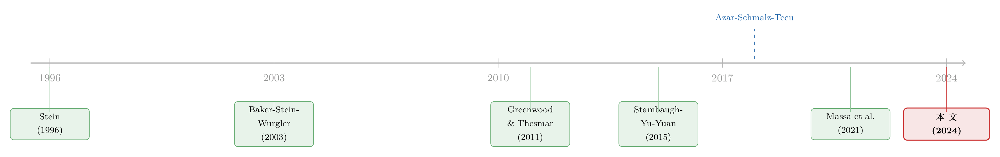

「脆弱」的股价，逼出来的现金：当 CFO 开始为还没发生的错误定价买单
本文读的是 Friberg, Goldstein & Hankins (2024, Journal of Financial Economics)：当一家公司的股东结构变化，使它的股价更容易被「非基本面」的资金流推来推去——也就是 股价脆弱性 (stock price fragility) 上升——公司并不会坐等错误定价真的发生，而是提前多囤现金、少投资。一个标准差的脆弱性上升，把现金持有量在均值处推高约 2.0%，量级几乎等同于盈利波动率这一「教科书级」的预防性动机。
1 引言：一个 CFO 的两难
先讲一个场景。2021 年春天，对冲基金 Archegos 爆仓，几只蓝筹股在一周内被它和银行「拆仓」的卖盘砸出过山车行情——公司的基本面什么都没变，股价却剧烈震荡。《华尔街日报》当时采访了一批公司财务高管，记下了他们的两难：
「他们不想被自家股价牵着鼻子走，但也没法对它视而不见。」
这句话听上去像句无关痛痒的牢骚，可它其实埋着一个相当深刻的公司金融问题。我们都知道，股价里掺着噪声；我们也大致知道，错误定价会通过各种渠道反过来影响公司的真实决策——这就是所谓的 反馈效应 (feedback effect)。但过去三十年，几乎所有这方面的研究都在做同一件事：先抓住一次错误定价的冲击，再去看它落地之后公司做了什么。投资变了没有？并购变了没有？
可这里有一个被绕过去的问题。如果经理人能预见到「我这只股票以后更容易被乱定价」，他会不会在错误定价真正发生之前就先动手？
这正是 Friberg、Goldstein 和 Hankins 这篇文章要问的。他们把镜头往前挪了一格：不去争论某次价格波动到底是不是非基本面的（这恰恰是反馈效应文献里吵得最凶、也最难证的一环），而是问——当公司预期到自己暴露在非基本面冲击下的程度上升了，它的财务行为会不会变？
这一步看似只是「换了个问法」，却干净利落地绕开了识别上的死结，还顺手开出一片新的天地：金融市场的冲击，原来在它兑现之前就已经在改写公司的资产负债表了。
2 一个核心概念：股价脆弱性
要把这个故事讲下去，先得说清楚什么叫「脆弱」。
这里用的是 Greenwood 和 Thesmar (2011) 提出的 股价脆弱性 (stock price fragility) 度量。它的直觉非常朴素：一只股票的价格会不会被资金流推得乱晃，不取决于单个股东，而取决于股东们的流动性需求有多「同步」。如果一只股票的持有人——比如几家共同基金——因为某种共同的原因要同时抛售（赎回潮、风格切换、被动跟踪同一个指数），那么它们的卖盘就会高度相关，订单流的特异性波动就大，股价也就更容易偏离基本面。这样的股票，就是「脆弱」的。
Greenwood 和 Thesmar 用现成的共同基金持仓数据把这个度量算了出来，并指出：随着共同基金行业越来越集中、持仓越来越扎堆，整个市场的脆弱性在过去几十年里显著上升。换句话说，脆弱性不是个抽象概念，它是一个能逐季度、逐公司算出来的变量，而且它会因为股东结构的变化而变化——这一点至关重要，因为它意味着我们能观察到「同一家公司、脆弱性前后不同」的对比。
注意「脆弱性」和「当下的错误定价」是两回事。前者是未来被乱定价的风险（一个事前的、关于二阶矩的量），后者是此刻价格偏离基本面的程度。本文全篇要捕捉的是前者——这也是它和过往反馈效应文献最根本的分野。关于基金净值「算不准」本身如何成为一种脆弱性来源，可参见《加息前夜的悄然撤离：当「算不准的净值」反而成了基金的减震器》。
接着，一个自然的问题是：脆弱性上升，凭什么会让公司多囤现金？这就要靠一个模型把机制讲透。
3 模型：为什么「脆弱」会逼出现金
文章给了一个三期模型来点明渠道。它的骨架沿用 Baker, Stein & Wurgler (2003)（再往上是 Stein (1996)）的传统——公司观察到自己的股价后，决定投资、决定要不要增发——但关键的不同在于：本文把决策提前到了「事前」（ex ante），即在错误定价还没出现时就决定预防性地囤多少现金。
设定如下。有三个日期 0, 1, 2。
日期 1（融资、错误定价、与资本市场打交道）。 公司此时的现金余额为
$$ c \equiv x + e $$
其中 \(x\) 是从日期 0 带过来的初始现金，\(e\) 是这期实现的盈利，服从分布 \(F(e)\)、密度 \(f(e)\)，取值在 \([\underline{e}, \overline{e}]\) 上，且 \(\underline{e} < 0 < \overline{e}\)。公司可以在资本市场上募集新现金 \(\Delta c \ge 0\)，上限为 \(\overline{\Delta c}\)，但募资条件取决于股价的错误定价程度 \(\Delta p\)。若股票被高估，\(\Delta p > 0\)，增发是净赚；若被低估，\(\Delta p < 0\)，增发是净亏。关键假设是：\(\Delta p\) 的密度 \(g(\Delta p)\) 关于零对称——也就是说，模型里没有预先塞进任何「高估和低估不对称」的东西。
用 \(G(\Delta c, \Delta p^+) \ge 0\) 表示高估时的融资收益，\(L(\Delta c, \Delta p^-) \ge 0\) 表示低估时的融资损失，二者对各自变量都递增、（弱）凸，且交叉导数为正。再假设公司要持续经营，现金必须维持在阈值 \(c^*\) 之上；一旦 \(x + e\) 掉到 \(c^*\) 以下，它就被迫去市场上补足缺口。于是日期 1 的最优行为是：
$$ \Delta c = \begin{cases} \overline{\Delta c} & \text{if } \Delta p > 0 \\ c^* - x - e & \text{if } \Delta p \le 0 \text{ and } x + e < c^* \\ 0 & \text{otherwise} \end{cases} $$
读这个分段函数，故事就出来了：股票被高估时，公司有便宜不占白不占，顶格增发 \(\overline{\Delta c}\) 套利；股票被低估、又恰好缺钱时，它只能咬着牙发行、补到刚好够 \(c^*\)，认下这笔损失；其余情况，按兵不动。
日期 0（事前的现金决策）。 现在退回到起点。公司要选初始现金 \(x\)。多留现金的代价，是放弃一个到日期 2 才到期的长期项目的回报 \(h(x)\)，假设 \(h\) 递增且凸（\(h' > 0, h'' > 0\)）。在无贴现的设定下，公司选 \(x\) 来最大化：
现在到了真正关键的一步。我们对 \(V\) 关于 \(x\) 求一阶条件，盯住三块各自怎么变：
- 第一块 \(a1\) 贡献 \(1 - h'(x)\)：多留一块钱现金，直接价值是 1，但要损失 \(h'(x)\) 的项目回报。
- 第二块 \(a2\) 是高估时的套利收益——它根本不含 \(x\)。因为公司套利时顶格增发 \(\overline{\Delta c}\)，赚多少跟它兜里有多少现金毫无关系。求导，得零。
- 第三块 \(a3\) 是低估时的损失。\(L\) 对第一个参数 \(c^* - x - e\) 递增；\(x\) 越大，缺口越小，损失越小。所以这一块对 \(x\) 的导数是正的：多囤现金，能省下被迫低价增发的损失。
把它写成一阶条件，直觉就一目了然：
$$ h'(x^*) - 1 = \underbrace{\frac{\partial}{\partial x}\!\left[ \int_{\underline{e}}^{c^*-x}\!\!\int_{-\infty}^{0} L(c^*-x-e, \Delta p^-)\, g(\Delta p)\, d\Delta p\, f(e)\, de \right]}_{\text{marginal value of reducing the forced-financing loss}} $$
左边是多留现金的边际成本，右边是它换来的「少亏」。
于是反转出现了：模型里高估和低估明明是对称的，可结果却是不对称的。 为什么？因为高估带来的好处，公司任何时候都能去捡（顶格增发就行），它跟你留不留现金无关；而低估造成的损失，只有在你缺钱、被迫融资时才会砸到你头上。所以公司唯一能做的防御，就是事前多囤现金，把「缺钱」这件事的概率压下去。
最后一步：脆弱性进来了。脆弱性上升，等价于 \(\Delta p\) 的分布更「散」——大额低估 \(\Delta p^-\) 出现的概率更高。这直接抬高了上式右边的损失项，于是 \(h'(x^*)\) 必须更大，也就是 \(x^*\) 更高。模型的两个核心预测就此落地：
脆弱性越高的公司，现金持有越多、资本投资越少。 这不是因为它们已经被错误定价砸过，而是因为它们预见到自己更容易被砸。
4 识别策略：从面板回归到三场并购实验
模型给了方向，接下来是把它怼到数据上。这部分读者最该关心，我们说细一点。
第一层：面板回归。 基准做法是把 Greenwood–Thesmar 脆弱性度量回归到公司现金持有上，同时控制 行业×时间固定效应 (industry-time fixed effects) 和 公司固定效应 (firm fixed effects)，外加一组随时间变化的公司特征。双重固定效应意味着：识别用的是同一家公司内部脆弱性的变化（within-firm variation），并且剔除了同一行业、同一季度的共同冲击。结果稳健地呈现：脆弱性上升，现金上升。
但这里有个绕不开的内生性顾虑。作者讲得很坦诚：会不会是反过来的因果？比如投资者预期某公司未来要调高现金目标，于是改变了持仓结构，进而改变了脆弱性?又或者存在某个同时驱动「股东结构」和「现金政策」的遗漏变量？固定效应能挡住一部分，但挡不住所有。
第二层：自然实验。 于是真正撑起因果解释的，是几场外生的股东结构冲击。
主角是 2009 年贝莱德 (BlackRock) 收购巴克莱全球投资者 (Barclays Global Investors, BGI) 这桩并购。它被 Azar, Schmalz & Tecu (2018a)、Massa et al. (2021) 用作所有权集中度的外生冲击，原因正如 Massa 等人指出的，它有几个识别上极漂亮的特征：它出人意料地发生；它一次性影响了大量股票——被贝莱德和 BGI 同时持有的股票占了全球市值的 60% 以上；并且对许多股票的所有权集中度造成了实质性改变——在两家投资组合重叠度最高的那一五分位里，集中度上升了 8.5%。两家资产管理人合并，意味着原本由两拨人分别持有的股票，现在被同一个机构持有，其资金流的相关性陡增，脆弱性随之上升。
作者特别警惕一个混淆：贝莱德-BGI 合并也会带来 共同所有权 (common ownership) 的增加，而后者据 Azar et al. (2018a) 可能影响产品市场竞争与利润率，从而独立地抬高现金。本文的脆弱性渠道必须和这条「治理/竞争」渠道分开。一个聪明的辨识点是：大股东 (blockholder) 按 Becker et al. (2011) 的逻辑通常偏好更低现金、更多分红；而脆弱性渠道预测的恰恰相反——更高现金、更少回购。两条渠道在符号上打架，结果站在脆弱性这边。作者还借助 Dennis et al. (2022) 等对「共同所有权影响竞争」的质疑，进一步排除竞争渠道的污染。
第三层：复制性。 为了证明结论不是贝莱德这一个事件、这一段时间的偶然，作者又从 Lewellen & Lowry (2021) 里拿了样本期内另外两桩最大的资管并购——美国银行收购 Fleet 和 摩根大通收购 Bank One——重做实验，依然得到「脆弱性上升 → 现金上升」。
5 数据
- 持仓与脆弱性：基于共同基金持仓数据（s12/s34 类），按 Greenwood–Thesmar (2011) 的方法构造脆弱性度量。
- 错误定价代理：用 Stambaugh, Yu & Yuan (2015a) 的错误定价指标，在三个不同时间跨度上验证「脆弱性高 → 未来错误定价概率高」这一模型假设。
- 经理人情绪：用 Jiang et al. (2019b) 的经理人情绪指数，捕捉「过度乐观的未来回报预期」。
- 观测单位：公司×季度。识别主要依赖公司内部的脆弱性变化。
6 主要结果
把几个最该记住的量级摆出来：
(1) 现金。 用公司内部脆弱性变化来看，一个标准差的脆弱性上升，在均值处把现金持有推高约 2.0%。 这个量级有多大？作者给了一个绝佳的参照系：盈利波动率——这是预防性现金持有里最经典、最「显眼」的动机——对应的效应也不过是约 1.9%。也就是说，「股东结构带来的脆弱」对现金的拉动，几乎和「盈利本身的波动」一样强。这一点相当反直觉：一个纯粹关于「谁持有你」的变量，威力堪比一个关于「你赚多少、赚得稳不稳」的基本面变量。
(2) 因果实验。 在贝莱德-BGI 并购中，受冲击的公司因脆弱性外生上升，把现金持有提高了约 1.3 个百分点。方向、显著性都和面板回归一致。
(3) 不止是现金。 脆弱性对 资本支出 (CapEx)、研发 (R&D)、回购 (repurchases)、短期债务 (short-term debt) 都有负向影响。这一「全套」的预防性反应很重要，因为它能排除一个替代解释：「脆弱性 → 价格信息含量下降 → 经理人因为看不清价格而少投资」。可「价格变模糊」解释不了为什么公司会同时减少回购和短期债务——那是主动的流动性管理，是攒钱、是不把钱往外撒，而不是「看不清所以不敢动」。
(4) 异质性，反过来印证机制。 模型说，预防性囤现金的动力取决于「未来错误定价的概率」「缺钱的概率」「财务约束的严重程度」。于是预测应当是：小公司、盈利更波动、没有债券评级的公司对脆弱性更敏感。数据正是如此。这恰好是 Bakke & Whited (2010)「大公司不跟着当下错误定价走」那一发现的自然延伸——只不过这里跟的是未来的错误定价。
(5) 经理人预期。 模型的命门是「对未来错误定价的预期」。作者借 过度外推 (overextrapolation) 这一行为偏差来检验：如果经理人会高估近期事件，那么上一季度股价上涨的公司应当对脆弱性反应更弱——他们正沉浸在乐观里。数据确实如此；用 Jiang et al. (2019b) 的经理人情绪度量，在情绪高涨期对脆弱性的反应也被显著「压扁」。这把整条逻辑收口到了「是经理人的信念在驱动反应」上。（关于「直接去问经理人是否在看价格做决策」，可对照《从马嘴里掏答案：直接问 4641 家公司，它们到底有没有在「看价格做决策」》。）
7 文献脉络
这条研究的来路，其实是两股水流的交汇。
一股，是 市场对实体的反馈效应。Stein (1996) 在「非理性世界里的理性资本预算」中第一次系统地问：当股价掺了噪声，经理人该怎么做投资决策？Baker, Stein & Wurgler (2003) 接着给出经典的实证框架——股权依赖型公司的投资对股价更敏感。本文的模型正是站在这一脉之上，但把决策从「观察到价格之后」前移到了「预期到脆弱之前」。
另一股，是 股东结构如何制造非基本面波动。Greenwood & Thesmar (2011) 是枢纽：他们把「持有人流动性需求的相关性」凝练成可计算的脆弱性度量。再往后，Azar, Schmalz & Tecu (2018a) 和 Massa et al. (2021)（"Who is afraid of BlackRock?"）把贝莱德-BGI 并购打磨成一把识别利器。与此并行，Stambaugh, Yu & Yuan (2015a) 提供了被广泛使用的错误定价代理，让「脆弱 → 未来错误定价」这一假设得以被直接检验。

本文坐在两股水流的交汇处：它借 Greenwood–Thesmar 的度量与贝莱德实验来识别脆弱性，用 Baker-Stein-Wurgler 的传统来建模，却问了一个两边都没问过的问题——经理人会不会为「尚未发生的错误定价」提前买单。它由此也接上了预防性现金（Bates et al. 2009；Almeida et al. 2004 的现金-现金流敏感性）和不确定性-投资（Bernanke 1983；Baker, Bloom & Davis 2016）这两支更老的文献，给它们各添了一个「外部融资不确定性」的新来源。
8 评论与延伸（Q&A + 研究方向）
(a) 几个可能的疑问
Q：脆弱性和「当下的错误定价」到底差在哪？会不会只是换了个名字？
不是。当下错误定价是价格此刻偏离基本面的水平值（一阶量），脆弱性是未来被乱定价的风险（二阶量，about variance）。本文最妙的地方恰恰是只用后者——它绕开了「这次波动到底是不是非基本面」这个反馈效应文献里永远扯不清的争论，转而用「股东结构变化导致脆弱性外生上升」来识别。Bakke & Whited (2010) 发现大公司不跟当下错误定价走，本文却发现它们会为未来的脆弱性而动，两者并不矛盾。
Q：模型假设了高估低估对称，结论却是不对称的，这是不是偷换概念？
恰恰相反，这是模型最干净的地方。分布对称是假设，不对称是推导出来的结果。原因在于行动的时点不同：高估的好处，公司随时能靠顶格增发去捡，与现金存量无关；低估的损失，只在「缺钱被迫融资」时才落到头上。所以唯一的防御是事前囤现金压低缺钱概率。对称的冲击，经由非对称的「行动约束」，长出了非对称的现金政策。
Q：贝莱德-BGI 并购同时带来了共同所有权上升，怎么知道捕捉的是脆弱性而不是竞争/治理效应？
作者打了三张牌。其一，符号检验：大股东（Becker et al. 2011）偏好低现金高分红，脆弱性渠道预测高现金低回购，两者方向相反，数据站脆弱性这边。其二，借 Dennis et al. (2022)、Lewellen & Lowry (2021)、Koch et al. (2016) 对「共同所有权影响竞争」的质疑来削弱竞争渠道。其三，换两桩不涉及同等共同所有权争议的并购（BofA-Fleet、JPMorgan-Bank One）复制结果。不能说百分百干净，但层层设防。
Q：会不会是「价格信息含量下降→经理人看不清→少投资」？
这是最有力的替代解释，作者也正面回应了。要害在于：信息含量下降解释得了「少投资」，却解释不了公司同时减少回购和短期债务。后两者是主动的攒钱行为，不是「看不清不敢动」。是这「全套」预防性反应，把解释逼向了「主动流动性管理」而非「被动信息困惑」。
Q：2.0% 的现金效应，算大还是算小？
用对的尺子量就知道了。盈利波动率是预防性现金里最经典的动机，它的效应约
1.9%。一个纯粹关于「谁持有你」的变量，效应能和「你的现金流有多波动」打平手——这在量级上是相当可观的，也是文章「non-trivial effects」措辞的底气。
Q：这对「公司为什么不上市/退市」有什么含义？
作者在引言里点了一句很有意思的延伸：资管行业的膨胀抬高了整体股权脆弱性，这本身可能成为一股把公司挡在公开市场之外的力量。也就是说，脆弱性的成本不只体现在价格被砸之后，还体现在公司为防御它而常年多压的那部分现金、少投的那部分项目上——甚至体现在「干脆不来公开市场」这个选择上。
(b) 几个可能的研究问题与提案
1. 把脆弱性搬到公司债/信用市场。
【经济故事】本文全在股权侧。但债券持有人的「流动性需求相关性」同样存在——共同基金、保险、ETF 的赎回潮会让某些债券的卖盘高度同步。如果一家公司的债券投资者基础变得更脆弱，它会不会也提前囤现金、缩短债务久期来自保？这与 Massa, Yasuda & Zhang (2013)「债券投资者基础的供给不确定性影响杠杆」直接对话。 【可行性】中。需要构造债券持有人的脆弱性度量（可借 eMAXX/Mergent 的持仓数据移植 Greenwood–Thesmar 思路），识别可沿用债券基金大并购或被动债券指数纳入作为外生冲击。难点是债券持仓数据频率和覆盖度不如股票。
2. 外资持有人与脆弱性的「跨境」版本。
【经济故事】当一只股票的边际持有人从本土机构换成外资，资金流的相关性结构会变——外资可能因母国的赎回、风险偏好切换而同步进出。一次指数纳入（如 MSCI 新兴市场指数扩容）会外生地改变外资占比，从而改变脆弱性。新兴市场公司是否会因此预防性囤现金、压投资？ 【可行性】高。MSCI/FTSE 纳入事件是干净的外生冲击，外资持仓数据在很多市场可得。识别策略清晰（纳入前后 DiD），且能和「全球波动下的资本外逃」一类研究互补。
3. 脆弱性 × 久期/期限管理。
【经济故事】本文发现脆弱性会压短期债务。但 Harford, Klasa & Maxwell (2014) 指出再融资风险本身就驱动现金持有。一个自然的问题是：脆弱性和再融资风险是替代还是互补？面临高脆弱性的公司，是更倾向于拉长债务久期（少进市场），还是更依赖现金缓冲？ 【可行性】高。债务期限结构数据（Capital IQ、Compustat）齐全，可在本文同一框架内加一个久期方程，用同样的并购实验识别。
4. 被动持股份额上升与总量层面的预防性囤积。
【经济故事】如果脆弱性主要由被动/指数化持仓的扩张驱动，而被动份额本身在过去二十年翻倍式增长（参见《你以为被动投资只占 16%？它其实是这个数的两倍》），那么整个企业部门的现金囤积里，有多大一块是「被脆弱性逼出来的」？这是一个把微观机制加总到宏观现金之谜的尝试。 【可行性】中。需要把脆弱性的时序变化和总量现金率的上升做归因分解，识别上较弱（更接近会计核算而非因果），但作为「量级有多重要」的描述性证据很有价值。
5. 经理人信念的直接度量。
【经济故事】本文用「上季度股价表现」「情绪指数」间接刻画经理人对未来错误定价的预期。能不能用电话会议文本、10-K 风险因素披露里对「股东结构/波动」的提及频率，构造一个更直接的「脆弱性关注度」度量，再看它是否预测囤现金？ 【可行性】高。文本数据（电话会议、10-K）可得，NLP 方法成熟，可与 Jiang et al. (2019b) 的情绪度量交叉验证。难点是从「提及」到「信念」的映射需要谨慎。
我的判断
贡献。 这篇文章最漂亮的不是某个系数，而是问法的转向。把反馈效应从「冲击之后」推到「冲击之前」，一举绕开了「这次波动是不是非基本面」这个让整支文献内耗多年的死结，还顺手证明了金融市场对实体经济的影响在兑现之前就已存在。模型里「对称冲击经由非对称行动约束长出非对称政策」的那一步，干净得近乎优雅；而把脆弱性效应和盈利波动率放在同一把尺子上比，更是把「重要性」说得让人信服。
对识别的担忧。 三点。其一，主力实验仍是贝莱德-BGI 一个事件，虽然作者用另外两桩并购复制、并层层排除共同所有权的污染，但「资管并购抬高脆弱性」与「资管并购改变治理/竞争」终究纠缠在同一个事件里，符号检验是好招，却不是铁证。其二，脆弱性度量本身依赖共同基金持仓，对持仓数据的频率和质量敏感，13F 之外的持有人（对冲基金、外资、散户）被低估，可能让「脆弱」被系统性测偏。其三，「经理人预期」始终是间接观测——文章靠「上季度收益」「情绪指数」来代理信念，但这两者也可能直接通过别的渠道影响现金，机制识别这一环比因果识别要软一些。
后续想看的。 我最想看到的，是把这套逻辑搬到信用市场和外资持有人上——债券投资者基础的脆弱性、外资占比的外生变动，是否同样能逼出预防性的现金与久期调整。如果能，那本文揭示的就不只是一个股权侧的现象，而是「持有人结构风险」作为一类全新的、可定价的公司风险的普遍存在。
参考文献
- Azar, J., Schmalz, M.C., Tecu, I. (2018). Anticompetitive effects of common ownership. Journal of Finance 73(4), 1513–1565.
- Baker, M., Stein, J.C., Wurgler, J. (2003). When does the market matter? Stock prices and the investment of equity-dependent firms. Quarterly Journal of Economics 118(3), 969–1005.
- Bakke, T.-E., Whited, T.M. (2010). Which firms follow the market? An analysis of corporate investment decisions. Review of Financial Studies 23(5), 1941–1980.
- Becker, B., Cronqvist, H., Fahlenbrach, R. (2011). 见正文引用（blockholder 偏好低现金高分红）。
- Friberg, R., Goldstein, I., Hankins, K.W. (2024). Corporate responses to stock price fragility. Journal of Financial Economics 153, 103795.
- Greenwood, R., Thesmar, D. (2011). Stock price fragility. Journal of Financial Economics 102(3), 471–490.
- Harford, J., Klasa, S., Maxwell, W.F. (2014). Refinancing risk and cash holdings. Journal of Finance 69(3), 975–1012.
- Jiang, F., Lee, J., Martin, X., Zhou, G. (2019). Manager sentiment and stock returns. Journal of Financial Economics 132(1), 126–149.
- Lewellen, K., Lowry, M. (2021). Does common ownership really increase firm coordination? Journal of Financial Economics 141(1), 322–344.
- Massa, M., Schumacher, D., Wang, Y. (2021). Who is afraid of BlackRock? Review of Financial Studies 34(4), 1987–2044.
- Massa, M., Yasuda, A., Zhang, L. (2013). Supply uncertainty of the bond investor base and the leverage of the firm. Journal of Financial Economics 110(1), 185–214.
- Stambaugh, R.F., Yu, J., Yuan, Y. (2015). Arbitrage asymmetry and the idiosyncratic volatility puzzle. Journal of Finance 70(5), 1903–1948.
- Stein, J.C. (1996). Rational capital budgeting in an irrational world. Journal of Business 69(4).